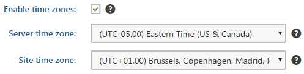
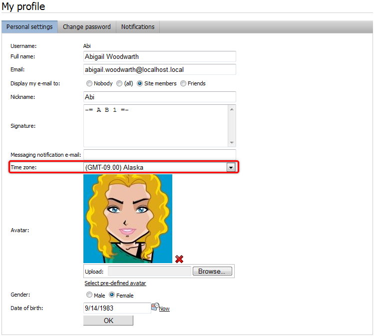

Configuring time zones
The Time zones application allows you to configure time zones that will be available in the system. You can set time zones for the following:
particular users
particular sites
physical location of the server
This can be useful if your site has an international audience and you want the date and time displayed on your site to be correct for users from across the world.
To use time zones, enable it in the settings:
Open the Settings application.
Navigate to Settings -> System.
In the Time Zones section, select the Enable time zones checkbox.

Time zones in the Settings applicationClick Save.
Time zones are currently supported in various applications throughout the Kentico administration interface.
Changing server time zones in Azure-hosted applications
Changing the server time zone using this approach is not possible in Azure-hosted applications. Furthermore, due to the nature of cloud-based services, the server hosting your application changes frequently. These changes are also reflected in event time-stamps and other places where server time is displayed or used, which may be undesirable.
If you wish to persistently configure the time zone for Azure-hosted applications, follow the instructions outlined in Changing the server time zone on Azure.
Please note: Articles linked here may not reflect the latest version of Kentico. Please report any issues with these links using the feedback form at the bottom of this page.
Usage examples
A typical example of use is displaying the time of forum posts when you have a global community – while the server may be located in New York (UTC-05:00), visitors coming from Paris (UTC+01:00) may see their new posts were added at 8am, while they would expect to see 2pm according to their current time.
Another example is a website of a global company that runs on a server in New York, but contains content for a French office. In this case, French visitors may wonder why the current time displayed by the server is 8am while it’s 2pm in Paris. That’s when you use the built-in support for multiple time zones.
Day and time in the Pages application
User Andy sets the Publish from value of a page to 3/14/2016 3:14:15 PM. His user time zone is set to UTC+00:00 (London).

Day and time value relative to London time zone
User Claire visits the page and sees that the Publish from value is 3/14/2016 11:14:15 AM because her user time zone is set to UTC-05:00 (New York).
Day and time value relative to New York time zone
Site time zone
If a user has no time zone specified, the day and time values are relative to the Site time zone. In this example, the site time zone is set to UTC+01:00 (Paris).

Day and time value relative to Paris time zone
Server time zone
If neither user time zone nor Site time zone are specified, the Server time zone is used.
Time zones in web parts
Web parts related to the Blogs, Forums, Message boards, Messaging and Smart search applications have the Time zones section in their web part properties, where you can set the applied time zone. The section contains the following two properties:
|
Time zone |
Specifies the type of time zone that the web part uses for its content. The following types are available:
|
|
Custom time zone |
Assigns a custom time zone specifically for the content of the web part. The web part uses the selected time zone regardless of the time zone settings of the website or user viewing the page. |
In the case of the Calendar and Event calendar web parts, these web part properties take no effect. Instead, you have to ensure the displaying of the correct time zone in the used transformation, as described in Displaying correct time in your code .
Setting time zones for users
Each user can have their own time zone settings:
Open the Users application.
Edit (
 ) a user.
) a user.On the Settings tab, select a time zone from the Time zone drop-down list.
Click Save.
Where applicable, these time zone settings are used instead of the Site time zone.
Users can also select their time zone on the live site, if you place the My Account or My Profile web part on one of your pages. If they have access to the administration interface, they can select their time zones in the My profile application using the Time zone drop-down list.

Users can select a time zone using the My profile web part